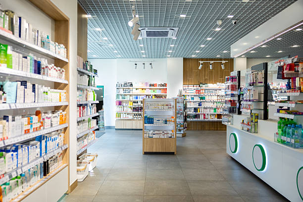

Simplifier et accélérer l’accès aux pharmacies et aux médicaments au Bénin grâce au numérique.
Lorsqu'une personne a besoin d'un médicament (enfant malade, douleur aiguë), l'accès à une information fiable devient une urgence absolue.
des ménages achètent en pharmacie.
subissent des ruptures de stock régulières.
Le patient doit appeler plusieurs pharmacies ou se déplacer d'officine en officine. Un temps précieux est perdu alors que le traitement ne peut pas attendre.
PharmaFinder est une plateforme numérique intuitive qui permet de trouver rapidement une pharmacie ouverte ou de garde à proximité.
Information centralisée sur les pharmacies de garde autour de vous.
Vérifiez la disponibilité du médicament avant de vous déplacer pour éviter les trajets inutiles.

Une réponse concrète qui connecte directement la demande des patients aux capacités des officines de santé.
Les personnes et ménages recherchant une information immédiate sur la disponibilité des pharmacies de garde et les produits désirés.
Les officines souhaitant moderniser leur gestion, accroître leur visibilité locale et optimiser l'écoulement de leurs stocks.
Un modèle équilibré : accès gratuit à quota pour les patients, fonctionnalités avancées Premium et services pro pour les pharmacies.
Accès au logiciel de gestion de stock, horaires de garde et catalogue.
Statistiques détaillées sur la demande locale et les ruptures fréquentes.
Priorisation lors des recherches de proximité des patients.
Pourcentage sur les réservations et commandes prépayées.
Benchmark face aux solutions de santé existantes au Bénin.
| Solution | Ce qu'elle propose | Limites observées | Différenciation PharmaFinder |
|---|---|---|---|
|
PM
PharMap
|
Recherche médicaments & pharmacies, promesse < 10 min. (Màj oct. 2023). | Service actuellement non opérationnel / indisponible lors des tests. | Accès immédiat en 1 clic (recherche → itinéraire) + liaison avec logiciels officines. |
|
AB
AiBani
|
Plateforme e-santé généraliste tout-en-un (médecins, labos, urgences, pharmacies). | Positionnement très large, parcours non spécialisé pour l'urgence pharmacie. | Hyper-spécialisation pharmacie : « Je cherche → Je trouve → Je vais à l'officine ». |
|
GM
goMediCAL
|
Rendez-vous médicaux, consultations, parcours clinique global et paiement. | Orienté consultations médicales, la pharmacie n'est pas le cœur du produit. | Focus sur le dernier kilomètre patient-pharmacie + outils B2B de gestion officine. |
|
VH
VIHINTOH
|
Orientation santé publique & annuaire des pharmacies de garde par ville/date. | Annuaire d'orientation large, sans stocks actualisés ni intégration pharmacie. | Proximité automatique, distinction ouvert/garde, contact direct & connexion stocks. |
|
PharmaFinder
|
Gardes & ouvertes en temps réel, géolocalisation, statut, itinéraire 1-clic. | Écosystème dédié et opérationnel | Répond au besoin d'urgence immédiat puis étend l'expérience vers les stocks & la gestion officine. |
Contrairement aux solutions qui se limitent à répertorier, PharmaFinder est une plateforme dynamique qui rapproche le besoin de l'offre.
Pharmacies filtrées selon la position exacte du patient.
Indicateur de fiabilité et actualisation en temps réel.
Accessibilité maximale via Web et bot WhatsApp.
Tableaux de bord pour aider les pharmacies à comprendre la demande.
Un entonnoir omnicanal fluide allant de la découverte virale jusqu'à la fidélisation en pharmacie.
Découverte : Sensibilisation vidéo et formats courts sur les galères de recherche.
Confiance : Discussions, témoignages usagers et réassurance communautaire.
Communauté : Canaux réguliers, alertes directes et bot interactif rapide.
Recherche : Localisation instantanée des officines et consultation des stocks.
Intelligence : Assistance personnalisée, recommandations et recherche guidée.
Conversion : Délivrance du service, fidélisation et génération de revenus.
Project Manager / Développeur Fullstack
Chargé du Visuel et Contenu Multimédia
Ambassadrice du Projet
Aspect Juridique
Parce que lorsqu’on cherche un médicament, on ne cherche pas seulement une pharmacie : on cherche une solution.
Trouvez la pharmacie
Besoin d'un médicament ?